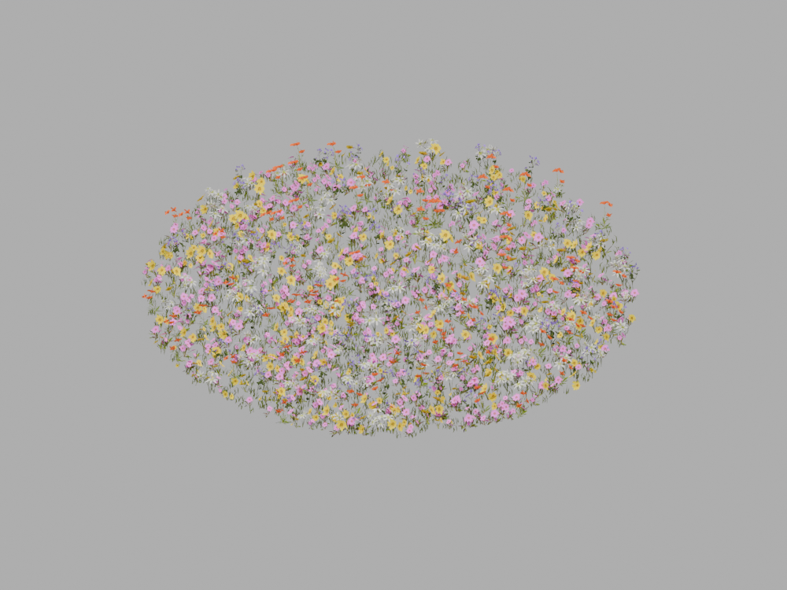

AR EXPERIENCE
디지털 꽃밭
약 7m 크기로 펼쳐지는 꽃밭입니다.
안드로이드 경량본 · 아이폰 호환성 보완

실행 안내
아이폰은 Safari, 안드로이드는 Chrome에서 열어 주세요. 카카오톡 등 앱 안에서 열었다면 메뉴에서 외부 브라우저로 열어 주세요.
안드로이드에서 열리지 않을 때
Google 앱과 Google Play AR 서비스를 업데이트하고 다시 시도해 주세요. 휴대폰에 따라 AR을 지원하지 않거나 3D 보기만 가능할 수 있습니다.
아이폰에서 열리지 않을 때
Safari에서 다시 열고 다운로드가 끝날 때까지 기다려 주세요. 모델 화면이 열리면 AR 모드로 전환하고 바닥을 비춰 주세요.